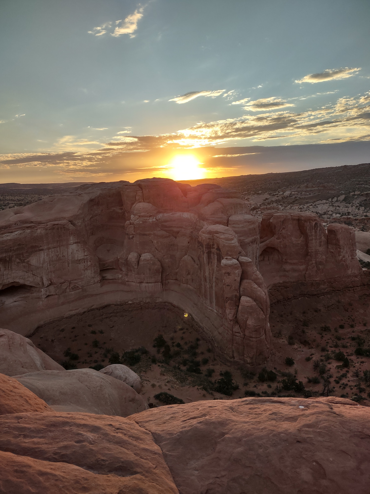

Trip to Moab, Utah
Since I am a nature lover, I like to visit new places. One of the ones I liked the most is Moab. It is located about 220 miles southeast of Salt Lake.
In Arches Park you can see different sandstone formations that are impressive where the force of nature over a long time is evident.
If you like hiking, a visit to this park is a must if you live in Utah or its surroundings.
During my trip to Moab I also had the opportunity to navigate the rapids of the Colorado River and appreciate the canyon and its landscapes.
So if you want to enjoy a little outdoor adventure, Moab is a highly recommended place.